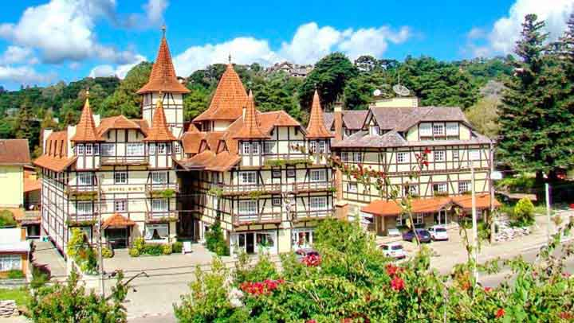

Gramado é uma cidade encantadora por natureza: os edifícios em estilo bávaro são complementados pela beleza das hortênsias que ocupam a maior parte dos espaços, conferindo um toque brasileiro ao charme europeu da região. A cidade é uma das portas de entrada para descobrir e se apaixonar pelos costumes, sotaques e tradições gaúchas. Um dos maiores atrativos da vida cultural gramadense são os variados eventos, que incluem mostras de cinema e shows musicais. Para os fãs da sétima arte, o Festival de Cinema de Gramado, um dos mais consagrados do país, é item obrigatório no roteiro. Realizado anualmente há quase 50 anos, o evento celebra e premia diversas produções cinematográficas nacionais. Se quiser planejar sua viagem para aproveitar o festival, separe o mês de agosto na sua agenda.
| Hótel | Endereço | Contato | Foto |
| Hotel Sky Gramado | Av. das Hortênsias, 680 - Planalto, Gramado - RS, 95675-072 | (54) 3421-3333 |  |
| Hotel Laghetto Siena | Avenida das Hortênsias Avenida das Hortênsias, R. Vigilante, 3000, Gramado - RS, 95670-670 | (54) 3295-9292 |
|
| Sky Valle | R. Acácia Negra, 700 - Jardim dos Ipes, Gramado - RS, 95670-672 | (54) 3295-2030 |
|